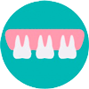
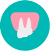
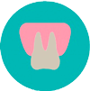
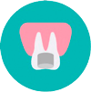
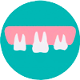
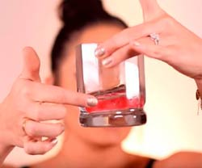
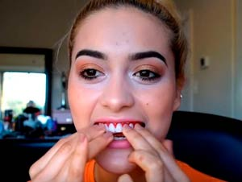

Съемные виниры Perfect Smile Veneers
Самый простой способ сделать улыбку обворожительной
- В 40 раз дешевле керамических виниров!
- Производятся в США
- Устанавливаются дома без боли
- Микротонкие, но крепкие и удобные
Акция закончится через:
Забудьте эти проблемы!
-
Неровные зубы
-
Отсутствует один или несколько зубов
-

Большие промежутки между зубами
-

Сломанные и сколотые зубы
-

Зубы утратили белизну
-

Старые потемневшие пломбы
-

Маленькие зубы
Почему для вас важно иметь красивую улыбку?
90% мнения о человеке формируется по тому, какое впечатление он производит внешне. Чем больше симпатия к человеку, тем лучше к нему отношение. Когда у вас будет красивая улыбка, вы станете привлекательнее и сексуальнее, вам будет легче договариваться с людьми, заключать успешные сделки, заводить новых друзей, проходить собеседования. Вы автоматически станете уверенней в себе, и ваша жизнь кардинально изменится.
- Деловые встречи
- Романтические свидания
- Фотосессии и видеосъемки
- Видео общение по Скайпу
- Встречи с бывшими одноклассниками и коллегами
- Собеседования при устройстве на работу
- Встречи с родственниками
- Знакомство с родителями
- Свадьбы, Дни рождения, юбилеи
3 простых шага, и ваша улыбка станет неотразимой
-

1. Положите виниры на 2 минуты в кипяток.
-
2. Плотно прижмите виниры к наружной стороне зубов для получения индивидуальной формы слепка.
-
3. Наденьте виниры. Улыбайтесь как можно чаще, ведь красивая улыбка идет всем!
Посмотрите видео
Невысокая цена и удобство лишь малая часть преимуществ
Perfect Smile Veneers

- 100% американское качество
- Безопасный материал
- Легко очищаются – можно мыть в воде
- Устанавливаются без боли и обточки зубов
- Идеально имитируют белоснежную улыбку
- Уникальное приспособление на всю жизнь
- Красивая улыбка за 2 минуты!
- Доступны абсолютно каждому человеку
- Подходят и мужчинам, и женщинам
ЧТО О PERFECT SMILE VENEERS ГОВОРИТ СТОМАТОЛОГ?
Владимир Коротаев
стоматолог, опыт врачебной практики – 17 лет
«На сегодняшний день существует несколько способов сделать улыбку красивой при поврежденных передних зубах, и стоматологи часто лукавят, когда говорят, что сделать это можно только сидя в кресле у стоматолога.
Perfect Smile Veneers – прекрасная альтернатива керамическим и фарфоровым винирам по доступной стоимости. Выглядят они даже лучше. Устанавливаются без обточки зубов и без боли. Даже посещать стоматолога не нужно – процедура установки и подгонки выполняется дома буквально за 2 минуты.
Конечно, Perfect Smile Veneers не получится носить постоянно как обычные виниры, но для особых случаев они подходят идеально. Виниры настолько тонкие и удобные, что вы перестанете их ощущать уже через несколько минут ношения»
Отзывы покупателей
При правильном креплении (занимает буквально 2-3 минуты) виниры не отваливаются в течение всего дня. Поэтому сейчас их всегда использую для официальных встреч, фотосессий, свиданий, походов в кино и театр. К тому же установленные виниры не доставляют каких-то неудобств и совсем не ощущаются при длительном ношении, да и аллергии не вызывают. Они универсального размера, то есть без проблем приобретают нужную форму, а также идеально скрывают все недостатки, неровности, сколы и дефекты зубов. К тому же за ними не нужен какой-либо специальный или слишком сложный уход (достаточно периодически промыть их в теплой воде). Сама пластина не ломается даже после 1-2 месяцев, хотя выглядит она очень тонкой.
Вероника Семеновна 29 лет
Впечатления от Perfect Smile пока в основном положительные. Пластина села на зубы идеально, держится крепко, практически не мешает. И надев ее, можно без проблем есть или употреблять разнообразные напитки. Хотя когда крепила в 1-й раз, боялась, что она повредит десны или попросту спадет от малейшего надавливания или воздействия, но этого так и не произошло. Конечно, зубы это не восстановит, но для экстренного устранения их дефектов вполне подойдет.
Галина Борисовна 31 год
Цена приемлемая, поэтому я без боязни заказала. В наборе есть подробная инструкция, но я всё равно смотрела видеоуроки в интернете, как правильно изначально прикрепить накладки. На каждой накладке к верхней и нижней челюсти с внутренней стороны есть белое напыление. Накладку на челюсть нужно положить в горячую воду, через примерно 2 минуты белое напыление становится прозрачным и мягким. В таком виде необходимо правильно наложить накладку на каждую челюсть в течение не больше 30-ти секунд. За это время прозрачное напыление приобретает форму вокруг своих собственных зубов и становится белым и твёрдым. Тогда, если накладку вытащить со рта можно увидеть, что она приняла форму зубов с захватом.
Светлана 24 лет
-
Доставка
Доставка по СНГ осуществляется почтой от 7 рабочих дней в зависимости от региона
-
Оплата
Оплата заказов осуществляется по факту получения товара
-
Гарантии
Мы всегда проверяем товар перед отправкой и гарантируем 100% качество
BEAUT-E SHOP
ADDRESS
© 2013- All rights reserved.

Privacy policy
General conditions of sale
Legal warning